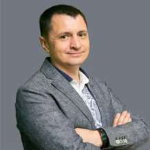

R&D центры
Собственный центр разработки и исследований решений для систем видеонаблюдения
О компании
Проектируем, производим и поддерживаем, чтобы работало


TRASSIR — это ядро комплексных систем ИИ-безопасности. Инженерная платформа, которая объединяет оборудование и программное обеспечение в единую архитектуру, где в базовых моделях уже доступен сильный функционал.
Камеры, видеорегистраторы программное обеспечение, видеоаналитика, СКУД, облачные сервисы и сетевое оборудование
— все элементы работают в одной системе и интегрируются с решениями других вендоров.
2002–2005
2006–2009
2010–2015
2016–2021
2021–2025
Надежное оборудование. Контроль качества. Поставка под задачи.

Собственный центр разработки и исследований решений для систем видеонаблюдения
Сборка оборудования и контроль качества продукции
Продукция соответствует требованиям ГОСТ и ТУ, проходит многоступенчатый контроль качества и тестирование на каждом этапе сборки.
Сборка объективов камер происходит в чистой комнате со специальными условиями
Камеры проходят автоматическое тестирование
Каждое устройство проходит длительное тестирование на стабильность работы
Меня всегда увлекали передовые технологии и инженерные разработки. И на протяжении многих лет я воспринимал внутреннее стремление познавать и открываться новому, как прекрасную возможность воплощать свои смелые идеи в жизнь. Именно желание экспериментировать и умение нестандартно подходить к решению задач стали ориентирами, с которыми компания сегодня движется по пути достижений, успехов и открытий. Благодаря потрясающей команде опытных разработчиков, профессиональных экспертов и обширной сети надёжных партнеров, мы добиваемся превосходных результатов и продолжаем расширять присутствие бренда TRASSIR в России и на международном рынке.

(заглушка под блок с призывом к действию)